Betsukai
Betsukai · Hokkaido
Betsukai
Highlighted on the Hokkaido map.
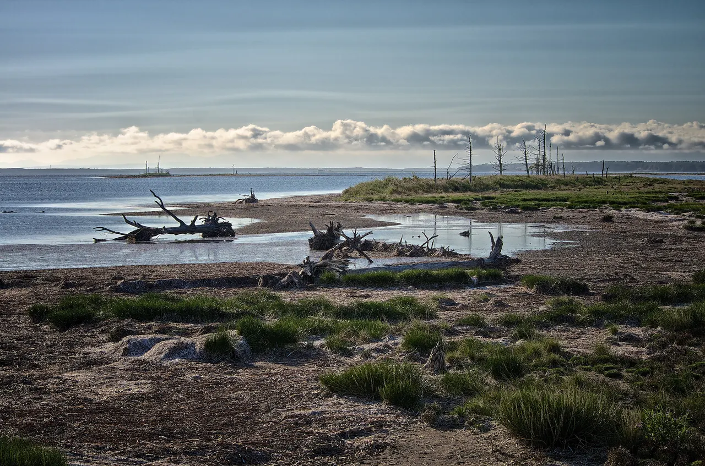
Stay
BPS HOTELS
Bps Hotels
BETSUKAI HOTEL peko
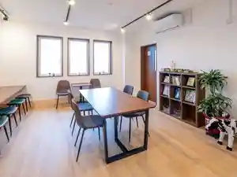
Betsukai Hotel Peko
湯元尾岱沼温泉シーサイドホテル
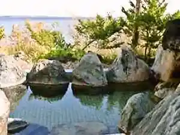
Yumoto Odaitou Onsen Shiisaidohoteru
別海パークホテル
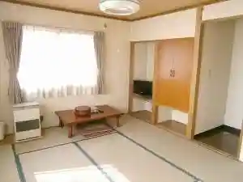
Bekkai Paakuhoteru
Dining
ジーコハウス
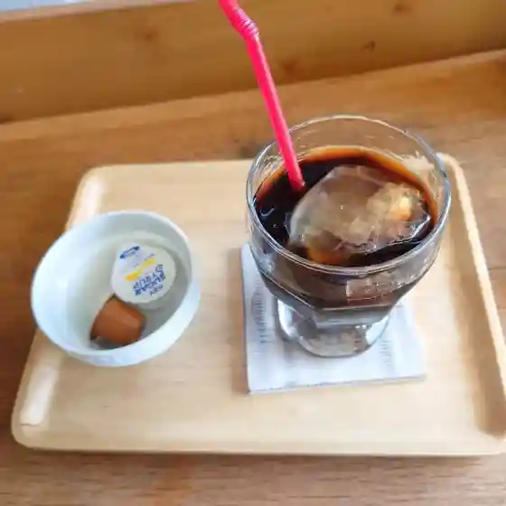
Jiikohausu
レストラン かつら
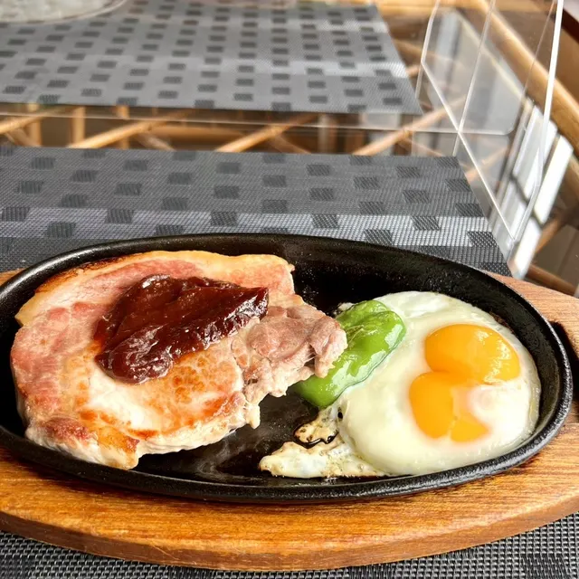
Resutoran Katsura
ミルクハウス
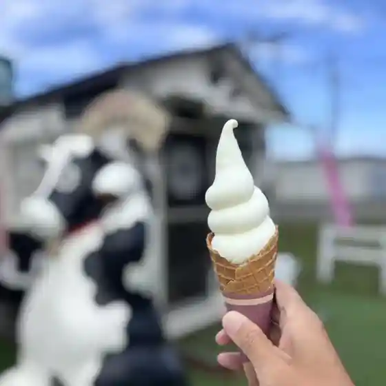
Mirukuhausu
コープさっぽろ べつかい店
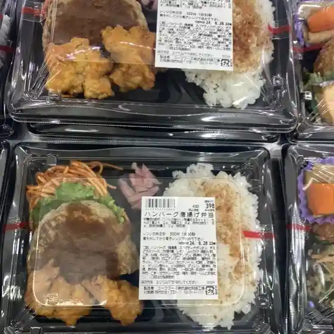
Koopu Sapporo Betsukai Mise
麺処 水無月
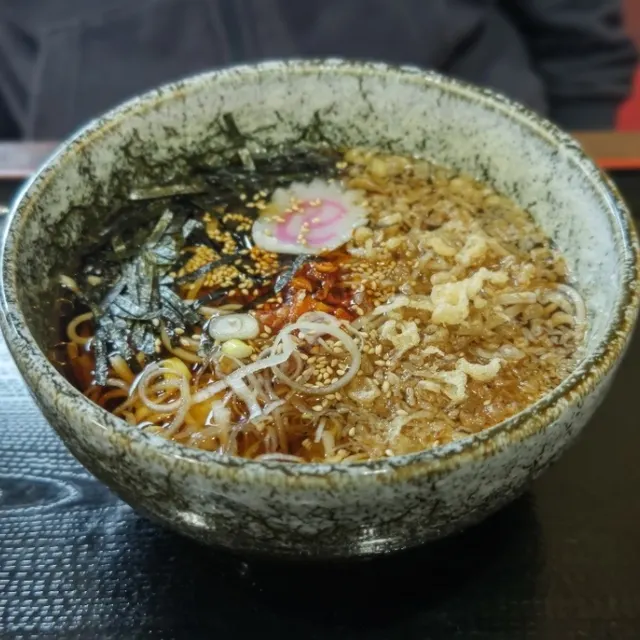
Men Tokoro Minatsuki
カフェ トランク
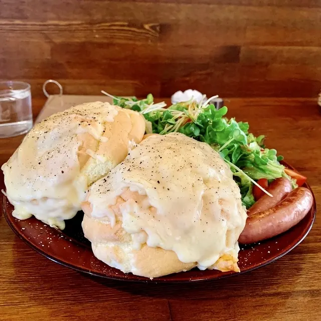
Kafe Toranku
クローバーハウス
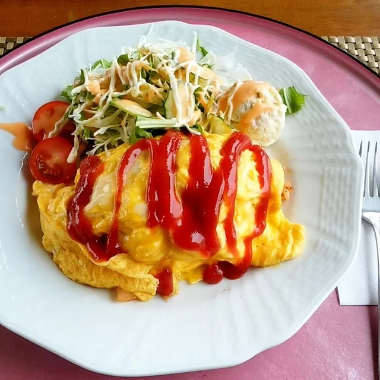
Kuroobaahausu
オンカフェ
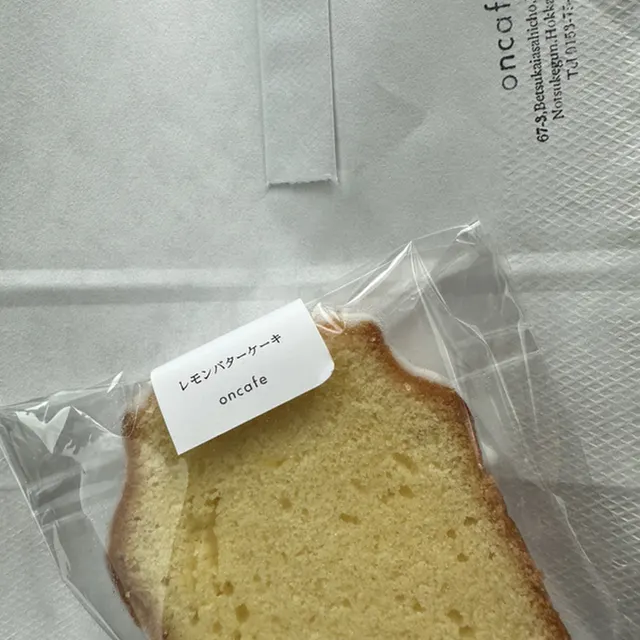
Onkafe
ともだち
Tomodachi
郊楽苑
Kou Raku En
河崎牧場チーズ工房
Kawasaki Bokujou Chiizu Koubou
炭火焼肉 蓮
Sumibi Yakiniku Hasu
ていしゃ場
Teisha Ba
シーサイドホテル
Shiisaidohoteru
異酒屋24時
I Sakaya 24 Toki
大森商店
Oomori Shouten
酔楽まる太別海店
Sui Tanoshima Ru Ta Bekkai Mise
Oh!LaLa
Oh ! Lala
一力
Ichiriki
湯元うたせ屋
Yumoto Utase Ya
鮨和
Sushi Wa
HOTEL MAG.HOUSE
Hotel Mag . House
居酒屋 萩
Izakaya Hagi
はまなす
Hamanasu